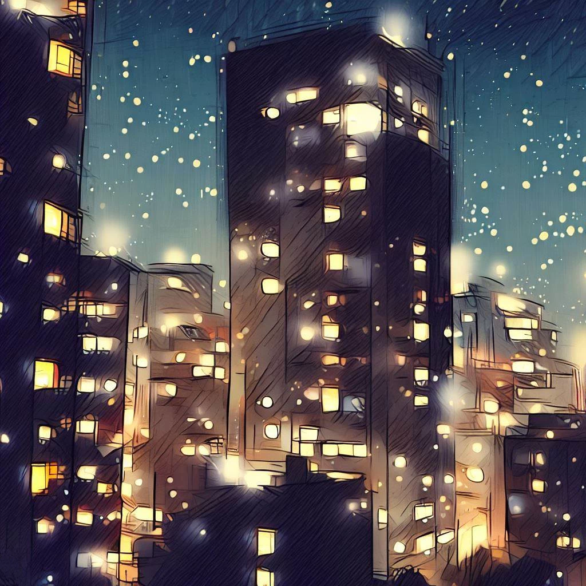

Komayo: 오기 게임의 신비로운 메아리
이 매력적인 전략 게임을 소개해준 Komayo에게 잠시 감사를 표하고 싶습니다. 그 매력과 신비는 내 인생에 깊은 인상을 남겼습니다. 다음은 이 대사를 통해 나누고 싶었던 소중한 추억, 우리의 만남의 이야기입니다.
사무실 탈출
메마른 사무실의 무미건조한 분위기 속에서 긴 하루를 보낸 후, 마침내 구원받은 것처럼 오랫동안 기다려온 하루의 끝이 도래했습니다. 날이 저물고 나는 차갑고 인공적인 에어컨을 뒤로하고 부드럽고 상쾌한 오사카의 저녁 바람에 흠뻑 젖었습니다.
무거웠지만 무의미했던 낮의 광란은 점차 사라지고 밤의 고요함에 자리를 내주었다. 오늘의 재미없는 수고로 어수선했던 내 생각은 도시의 별이 빛나는 광활함과 조용하고 고요함 앞에서 맑아지기 시작했습니다.

나는 도시의 얽힌 골목길을 안내받게 했다. 그날의 단조로움은 구석구석 녹아내리는 듯했고, 미지의 신비로 대체되었습니다. 야행성 베일 아래 고층 빌딩의 부드럽고 환영하는 실루엣, 콘크리트 하늘을 배경으로 반짝이는 불빛은 낮의 위협적인 존재와 대조를 이룹니다.
상가골목의 활기찬 분위기, 노점상 냄새, 야행성 대화의 속삭임이 짜릿한 도시의 그림을 만들어냈다. 내 마음은 비록 기진맥진했지만 지적인 도전, 하루의 걱정거리로부터 주의를 돌릴 방법을 찾았습니다. 그때 당시 가장 재능 있고 저명한 쇼기 선수들이 한때 서로 대결했던 유명한 장소인 Bar de la Régence라는 눈에 띄지 않는 간판을 보았습니다.
적막한 골목에 감춰진 이 안식처는 나에게 몸을 바쳐 게임의 미묘한 부름을 마음 속으로 속삭였다 게임의 가능성과 맞물려 그 신중함의 메아리가 부드러운 속삭임처럼 내 안에 울려 퍼진 유혹을 불러일으켰다 신비와 호기심으로.
파티의 소굴
Bar de la Régence의 부드럽고 절제된 조명이 저를 반겼고, 그 따뜻한 분위기는 평온함을 불러일으켰습니다. 장소의 평온함은 많은 장기 게임의 과정으로 스며들었고, 의심할 여지 없이 탈출을 찾는 여러 세대의 선수들의 저녁 시간을 활기차게 했습니다.
게임의 세계에 몰입하기 전에 카운터에서 사케 한 잔을 주문했습니다. 고대 쪽모이 세공 마룻바닥이 내 발 아래에서 부드럽게 항의하는 동안 내 눈은 조용한 빛에 적응했습니다. 쇼기의 부드러운 소리, 속삭이는 대화, 팬들의 바스락거리는 소리가 신비로운 분위기를 더했습니다. 향과 섞인 고대 나무의 향기는 내 감각을 진정시키고 다가올 지적 활동에 대비했습니다.
남녀노소를 가리지 않고 손님들이 쇼기 게임에 열정적으로 빠져들었습니다. 각자의 방식으로 각 샷과 관련된 긴장, 기쁨 또는 실망을 표현했습니다. 내 눈앞에서 펼쳐지는 전략과 위트의 무언의 발레였다.
저녁 상대를 찾던 중 한적한 테이블에 홀로 앉아 있는 여자가 눈에 들어왔다. 그녀의 고요한 존재감과 은은한 미모가 궁금증을 자아냈다. 단호하지만 신중한 발걸음으로 다가가 공손한 미소를 짓고 게임을 제안했습니다.

야간수업
내 제안에 대한 그의 반응은 그의 얼굴을 환히 밝히는 미소, 말이 필요 없는 암묵적인 수락이었다.
의외의 기품으로 예전에 비단 천 아래 가려졌던 게임판을 공개했다. 내 시선은 예상외로 표준보다 더 콤팩트해 보이는 플레이 표면에 즉시 고정되었습니다. 그것은 내가 보던 전통적인 쇼기반이 아니라, 한 면에 8개의 정사각형이 있는 보다 친밀한 정사각형 격자였습니다. 내가 놀라움을 표현하기도 전에 우아한 이방인이 먼저 내 혼란을 풀었고 그녀의 목소리는 부드러운 여름 바람처럼 주변 공기와 어우러졌다.
그녀는 자신 있게 선언했다. "우리는 게임을 시작하기 위해 각각 18피스 세트를 가지고 있습니다." 그녀는 이러한 흥미로운 세부 사항을 공개하면서 즐거운 표정을 지었습니다.

"이 실루엣의 체스판에서 하나는 그 명백한 위엄이 돋보입니다."라고 그녀는 특히 우아함의 중심 부분을 가리키며 말했습니다. "여기 공주가 있다. 바보의 위엄과 기병의 무한한 자유로 치장된 그녀는 기교와 힘으로 오기반을 다스리며, 이 현대적인 쇼기에 낭만주의의 바람을 불어넣는다."
나의 놀라움에 그의 미소가 커졌다. 그의 눈에는 놀리는 반짝임이 빛났고, 장난스러움은 그를 둘러싼 미스터리를 고조시킬 뿐이었습니다. 그녀는 조각을 판 위에 놓기 시작했고, 그녀의 민첩하고 정확한 손가락은 우리의 미래 전쟁터에 생기를 불어넣었습니다.
그녀가 조각을 세울 때 나는 또 다른 불일치를 발견했습니다. 오기반의 모퉁이에 서 있는 탑이었습니다. "전통적인 창은 이 탑으로 대체되었습니다." 그녀는 내 생각을 읽는 듯 설명했습니다.
모든 루크, 모든 장군, 모든 폰이 완벽한 조화를 이루며 줄을 섰습니다. 다가올 싸움을 예상하면서 나는 이 새로 공개된 퍼즐에 참을 수 없이 끌리는 나를 발견했습니다. 조각의 황금빛 반짝임과 신비한 적의 반짝이는 시선으로 더욱 매혹되었습니다.
성령의 시험
시계의 똑딱거리는 소리가 시간의 흐름을 간간이 알려주었고, 전투의 정적은 보드 위의 조각들이 내는 작은 소리에 의해서만 방해를 받았습니다. 주교는 결단력 있게 움직였고, 기사는 대담하게 도약했으며, 공주는 놀라운 효율성으로 전장을 지배했습니다. 거의 감지할 수 없는 싸움의 리듬이 방안을 가득 채우며 실감 나는 긴장감을 선사했다.
당황스러운 기술로 내 수수께끼의 적은 그의 조각을 지시했습니다. 제거되지 않고 포로로 잡힌 사람들은 능숙하게 다시 도입되어 내 라인 뒤에서 낙하산을 타고 전투에 변화하는 역학을 주입했습니다. 각각의 움직임은 전술의 교훈이었고, 각 조각은 거의 외과적 세심함으로 짜여진 보이지 않는 유대로 서로 연결되어 있었습니다.
나는 맹렬한 결단력으로 내 조각을 처리하고 조심스럽게 조직된 방어로 그의 맹공격을 막아내며 버텼습니다. 그러나 결정을 내릴 때마다 내 비축된 에너지가 필요한 것 같았고, 각 동작은 수행하기에 점점 더 무거워졌습니다. 눈꺼풀이 무거워지기 시작했고 피로가 쌓이기 시작했습니다.
눈을 뜨려고 애쓰고 있을 때, 그 은밀한 적이 수면을 장악했습니다. 내 몸은 피로에 굴복했고, 바의 불빛은 어두워지는 내 눈 앞에서 춤을 췄다. 나는 달래는 어둠 속으로 뛰어들었고, 내 기억 속에 각인된 마지막 이미지는 칠흑 같은 하늘에서 머나먼 달처럼 반짝이는 신비한 적의 승리의 미소였다.

새벽의 메아리
시간은 내 마음을 뒤덮은 어둠에 삼켜져 증발한 것 같았다. 어둠으로의 전환은 매끄럽고 소음이 없었기 때문에 당황스러운 안개를 탐색할 수 있었습니다. 내 마음은 혼란의 바다에 휩싸여 어둠에서 벗어나기 위해 고군분투했습니다.
밤에 길을 잃은 배처럼, 나는 마침내 밝은 빛으로 돌아가는 길을 찾았습니다. 나는 새벽의 부드러운 빛에 잠긴 거의 변하지 않은 방으로 눈을 떴다. 오기반은 내가 떠난 그대로 서서 밤의 전투를 조용히 목격했다. 그러나 상대의 자리는 이제 비어 있었고, 젊은 여성의 신비한 기운은 동틀 무렵 꿈처럼 사라졌다.
그의 부재의 무게, 공기를 무겁게 만들고 방을 조용하게 만드는 정의할 수 없는 공허함이 느껴졌다. 내 시선은 오기반 위를 미끄러지더니 게임 판 옆에 있는 가지런히 접힌 종이에 내려앉았다.
거기에는 "Komayo"라는 이름과 함께 "감사합니다"라는 한 단어가 새겨 져 있습니다. 이 덧없지만 눈에 띄는 만남의 마지막 흔적인 우아한 시그니처는 Bar de la Régence에서 애매하고 매혹적인 Komayo와 ogi를 연주하며 보냈습니다.